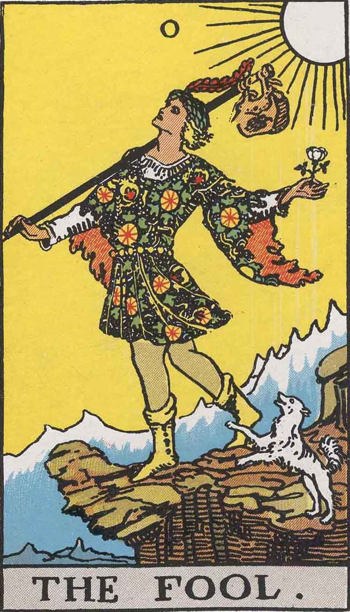
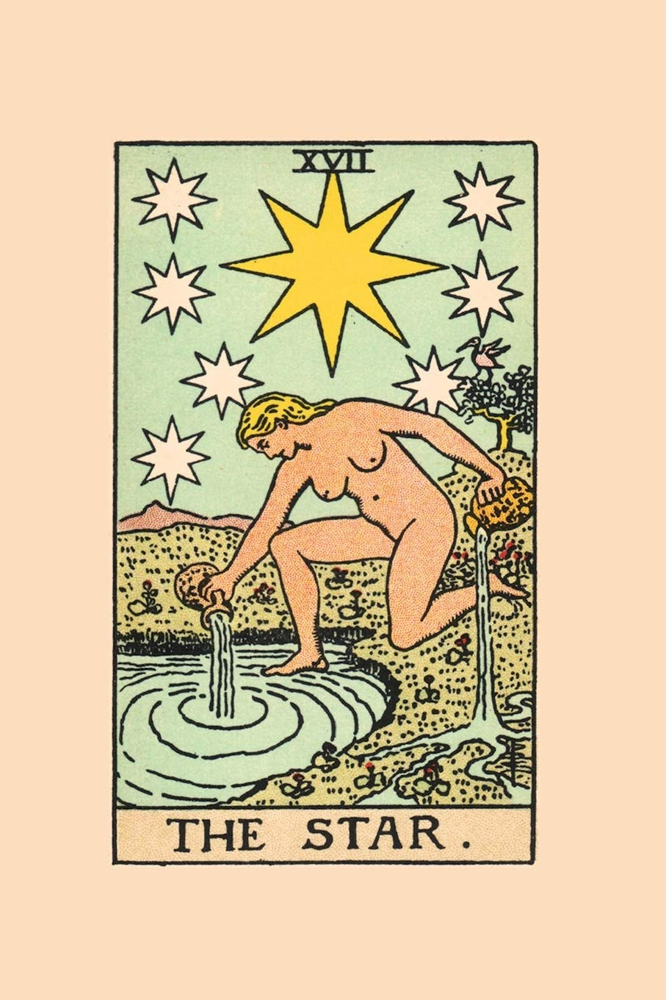
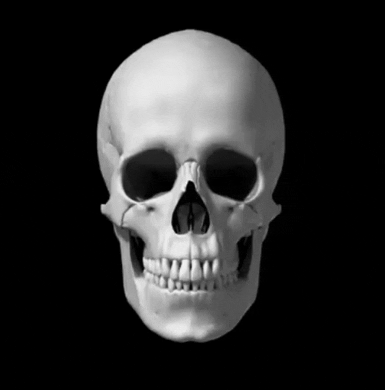
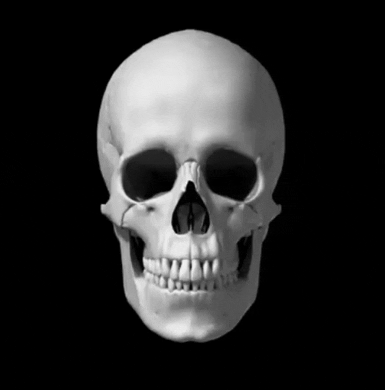

Знаки зодиака
- старшая — состоящая из старших арканов
- младшая — состоящая из младших арканов.
- младшая усечённая — состоящая из младших арканов, эквивалентных 36-карточной игральной колоде. Примечание: в цыганских гаданиях используется 36-карточная колода игральных карт, но по сути это младшая усечённая колода Таро.
- жезлы (булавы, палки, посохи, скипетры)
- мечи (копья, сабли)
- чаши, кубки
- пентакли, монеты (диски, динарии)
- король (Фараон, Рыцарь)
- королева (Дама, Сивилла)
- принц (рыцарь, кавалер, всадник)
- паж (принцесса, валет, вестник). Оставшиеся 10 карт масти являются очковыми, то есть имеют достоинства от 1 очка до 10. Одноочковые карты именуются тузами. Масти Младших арканов соответствуют мастям европейских игральных карт: Жезлы (Скипетры, Посохи и т. п.) — трефам, Чаши (Кубки) — червям, Мечи — пикам, Монеты (Динарии, Круги, Пентакли и т. п.) — бубнам. Это наиболее распространённая[где?] система соответствий, хотя имеются другие варианты. Особую роль в группе старших арканов играет карта, по-русски чаще всего называемая «Дураком», «Безумцем» или «Шутом». В карточных играх с колодами Таро она играет роль джокера и чаще всего либо не имеет номера вообще, либо имеет номер 0. Расположение «Дурака» в последовательности других старших арканов является важным пунктом многих оккультных учений, использующих Таро в качестве символической базы. Историки, занимающиеся этим вопросом, полагают, что козыри (Старшие арканы) Таро были созданы и добавлены к колоде в Италии не раньше середины XV века[3]. Значение Таро в эзотерической традиции начало появляться в XVIII веке, когда Кур де Жебелен опубликовал работу «Первобытный мир», в которой заявил, что Таро восходит к египетской традиции.
Старшие арканы
Старшие (или великие) арканы. К ним относятся 22 карты, каждая из которых имеет своё оригинальное название. В классическом (наиболее распространённом) варианте козыри имеют названия: «Дурак» («Шут»), «Маг», «Жрица», «Императрица», «Император», «Иерофант» («Первосвященник»), «Влюблённые» («Выбор»), «Колесница», «Справедливость» («Правосудие»), «Отшельник», «Колесо Фортуны» («Зеркало»), «Сила», «Повешенный», «Смерть», «Умеренность» («Время»), «Дьявол», «Башня», «Звезда», «Луна», «Солнце», «Страшный суд» («Суд»), «Мир».Младшие арканы
Запрос «Рыцарь кубков» перенаправляется сюда; о фильме Терренса Малика см. Рыцарь кубков (фильм). Остальные 56 карт, младшие арканы, делятся на четыре масти:Топ-3 моих любимых старших аркан
 На карте изображён человек в одежде шута, держащий в руке розу. На плечо у него закинута палка с которой свисает мешок, вышитый колдовскими символами. Он, глядя в небо, шагает к невидимому обрыву, от чего его безуспешно пытается удержать собачонка. архетип — Ребёнок, Наивный Дурачок; задача — непредвзятое восприятие нового, познание через игру; цель — радость жизни, накопление опыта «играючи»; риск — остаться неотёсанным, неумелым, легкомысленным, глупым, нет планов в голове; жизнеощущение — предприимчивость, привычка доверять инстинкту, удивительная открытость, ничем не замутнённая радость жизни, любознательность, желание всё испытать самому, беспечность, беззаботность.
 В середине изображено колесо, украшенное письменами. Это четыре еврейские буквы (тетраграмматон: йуд, хей, вав, хей) и четыре латинские (TORA или же TARO, если читать наоборот). Там же алхимические символы ртути, серы, воды и соли. По углам — символы евангелистов (орёл, лев, бык и ангел). Там же одна из змей с пояса Мага, один из Сфинксов из Повозки, и Германубис (крылатый демон). В других вариантах вместо них царь обезьян Хануман, богиня-кошка Баст и чудовище Тифон. На старинных колодах можно увидеть изображения прикованных к колесу людей.архетип — Призвание, Предсказание Оракула;
задача — осознание высшего Закона, принятие поставленной задачи;
цель — трансформация низшего в высшее, выполнение жизненной задачи, достижение целостности;
риск — фатализм, неверное понимание своей задачи;
жизнеощущение — уроки и опыт, позволяющие нам обрести целостность, хотя на первых порах они нам очень не нравятся.
В середине изображено колесо, украшенное письменами. Это четыре еврейские буквы (тетраграмматон: йуд, хей, вав, хей) и четыре латинские (TORA или же TARO, если читать наоборот). Там же алхимические символы ртути, серы, воды и соли. По углам — символы евангелистов (орёл, лев, бык и ангел). Там же одна из змей с пояса Мага, один из Сфинксов из Повозки, и Германубис (крылатый демон). В других вариантах вместо них царь обезьян Хануман, богиня-кошка Баст и чудовище Тифон. На старинных колодах можно увидеть изображения прикованных к колесу людей.архетип — Призвание, Предсказание Оракула;
задача — осознание высшего Закона, принятие поставленной задачи;
цель — трансформация низшего в высшее, выполнение жизненной задачи, достижение целостности;
риск — фатализм, неверное понимание своей задачи;
жизнеощущение — уроки и опыт, позволяющие нам обрести целостность, хотя на первых порах они нам очень не нравятся.
 Обычно изображена женщина, которая стоит на одном колене у воды. В руках у неё два кувшина, из которых вода льётся вниз. Вокруг неё красивый пейзаж, на дереве сидит птица. В небе видна одна большая и семь маленьких звёзд, у каждой восемь лучей. Ноги женщины не касаются земли, и она не отбрасывает тени.архетип — Мудрость; задача — надежда, видение будущего; цель — понимание высших взаимосвязей, приобщение к мудрости Космоса; риск — упущенный в поисках будущего контроль над настоящим, погоня за светлячками; жизнеощущение — вера в будущее, ощущение обновления, прилив сил.
 
